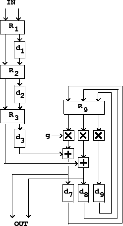
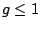
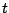
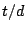
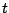
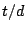

Artificial reverberation is widely used to improve the sound of recordings, but has a wide range of other musical applications [DJ85, pp.289-340]. Reverberation in real, natural spaces arises from a complicated pattern of sound reflections off the walls and other objects that define the space. It is a great oversimplification to imitate this process using recirculating, discrete delay networks. Nonetheless, modeling reverberation using recirculating delay lines can, with much work, be made to yield good results.
The central idea is to idealize any room (or other reverberant space) as a collection of parallel delay lines that models the memory of the air inside the room. At each point on the walls of the room, many straight-line paths terminate, each carrying sound to that point; the sound then reflects into many other paths, each one originating at that point, and leading eventually to some other point on a wall.
Although the wall (and the air we passed through to get to the wall) absorbs some of the sound, some portion of the incident power is reflected and makes it to another wall. If most of the energy recirculates, the room reverberates for a long time; if all of it does, the reverberation lasts forever. If at any frequency the walls reflect more energy overall than they receive, the sound will feed back unstably; this never happens in real rooms (conservation of energy prevents it), but it can happen in an artificial reverberator if it is not designed correctly.
To make an artificial reverberator using a delay network, we must fill two competing demands simultaneously. First, the delay lines must be long enough to prevent coloration in the output as a result of comb filtering. (Even if we move beyond the simple comb filter of Section 7.4, the frequency response will tend to have peaks and valleys whose spacing varies inversely with total delay time.) On the other hand, we should not hear individual echoes; the echo density should ideally be at least one thousand per second.
In pursuit of these aims, we assemble some number of delay lines and connect their outputs back to their inputs. The feedback path--the connection from the outputs back to the inputs of the delays--should have an aggregate gain that varies gently as a function of frequency, and never exceeds one for any frequency. A good starting point is to give the feedback path a flat frequency response and a gain slightly less than one; this is done using rotation matrices.
Ideally this is all we should need to do, but in reality we will not always want to use the thousands of delay lines it would take to model the paths between every possible pair of points on the walls. In practice we usually use between four and sixteen delay lines to model the room. This simplification sometimes reduces the echo density below what we would wish, so we might use more delay lines at the input of the recirculating network to increase the density.
Figure 7.15 shows a simple reverberator design that uses this principle. The incoming sound, shown as two separate signals in this example, is first thickened by progressively delaying one of the two signals and then intermixing them using a rotation matrix. At each stage the number of echoes of the original signal is doubled; typically we would use between 6 and 8 stages to make between 64 and 256 echos, all with a total delay of between 30 and 80 milliseconds. The figure shows three such stages.
|  |
Next comes the recirculating part of the reverberator. After the initial thickening, the input signal is fed into a bank of parallel delay lines, and their outputs are again mixed using a rotation matrix. The mixed outputs are attenuated by a gain , and fed back into the delay lines to make a recirculating network.
The value controls
the reverberation time. If the average length of the recirculating delay lines
is  , then any incoming sound is attenuated by a factor of after a
time delay of
, then any incoming sound is attenuated by a factor of after a
time delay of  . After time  the signal has recirculated  times,
losing
. After time  the signal has recirculated  times,
losing
 decibels each time around, so the total gain, in
decibels, is:
decibels each time around, so the total gain, in
decibels, is:
The framework shown above is the basis for many modern reverberator designs. Many extensions of this underlying design have been proposed. The most important next step would be to introduce filters in the recirculation path so that high frequencies can be made to decay more rapidly than low ones; this is readily accomplished with a very simple low-pass filter, but we will not work this out here, having not yet developed the needed filter theory.
In general, to use this framework to design a reverberator involves making many complicated choices of delay times, gains, and filter coefficients. Mountains of literature have been published on this topic; Barry Blesser has published a good overview [Ble01]. Much more is known about reverberator design and tuning that has not been published; precise designs are often kept secret for commercial reasons. In general, the design process involves painstaking and lengthy tuning by trial, error, and critical listening.